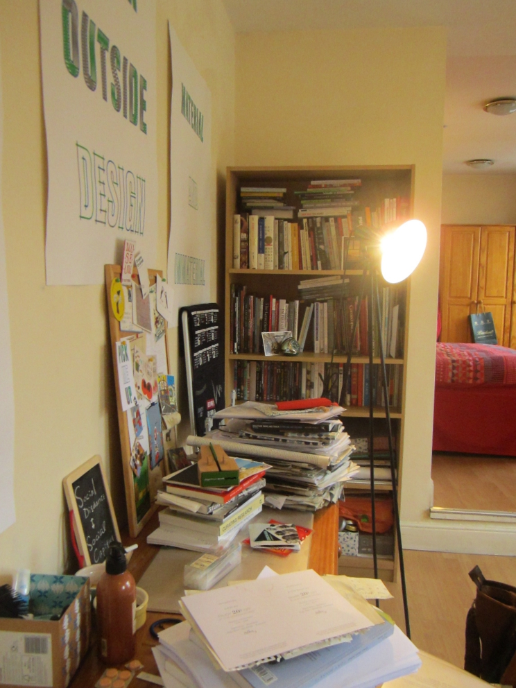

In Marcoux’s (2001)1 ethnography on people living in Montreal, one of the features of life in the city is the need to move houses every year. In the process of moving, people are faced with the need to sort out the things they possess and choose which to stay with them and which to discard. Some things are retained due to perceived values of functionality, and some are kept for their roles as memory tokens. While people look through their collections of things, they are also granted the opportunity to recreate their sense of self and rewrite the story of their lives.
In our casual conversations, C told me that the flat in London was her home away from her parents’ home in Taiwan. Therefore, she had total control of the arrangements and the things to incorporate in the home. She was also more motivated to clean the flat every day to reiterate the kind of self she wants to be.
C’s home, however, was located in London, a city where she did not arrive until commencing postgraduate studies as an adult. There was still an element of displacement in her life in London. As I took glimpses of the collections of books and DVDs she had on her shelves, she explained how some of the objects had helped her through difficult times.
Researcher: Were the DVDs you brought to London films in foreign languages (i.e. not in Mandarin Chinese)?
C: Yes.
Researcher: Did you buy them in Taiwan?
C: I bought them here actually [during MA studies], took them back to Taiwan, and brought them with me again to London. I bought a lot of DVDs back then, and I only brought a portion of them here, including a film by a French director I really liked. They provide solace to me, and I hardly ever watch them. If I become really upset someday, I get to watch them.
Research: How many have you actually watched?
C: Just one DVD.
Researcher: Just one after you moved in?
C: Yes.

As mentioned in the interview, DVDs were acquired during periods of displacement and “lived” with her in migration. When it comes to her book collection, they were understood depending on when, where, and how she had acquired them.
Researcher: Were the books you have now purchased in London?
C: Most of them, yes.
Researcher: The Mandarin ones were brought from Taiwan?
C: Yes, or sent to me by my mom. Sometimes when my mom sends things to me from Taiwan, there would be extra space in the packages. The post office charges packages according to the area and weight, and it would be a waste of money if the extra space isn’t fully used, so I would ask my mom to send me some books.
Researcher: Do you read them after you receive them?
C: Rarely.
Researcher: So they are solace to you as well?
C: Yes, since they are here... (laughs) This sounds bad.
Researcher: Of course not!
The books sent from Taiwan therefore carried emotional weight in this new domestic space in London. As mentioned in the interview excerpt, she chose the books herself to be relocated to London, so she had exercised agency to place them in a new context and at the same time performed "active management of one’s own externalized memory" (Miller, 2001, p. 8)2. Once they arrived in London, they were placed alongside the newer books she bought on the shelf, mingling together as a PhD student's book collection. Her collections thus mediated her memories of the past as well as her aspirations for the future.
Marcoux, J.-S. (2001). The Refurbishment of Memory. In: D. Miller, ed., Home Possessions: Material Culture behind Closed Doors. Oxford; New York: Berg, pp. 69-86. ↩
Miller, D. (2001). Behind Closed Doors. In: D. Miller, ed., Home Possessions: Material Culture behind Closed Doors. Oxford; New York: Berg, pp. 1-19. ↩